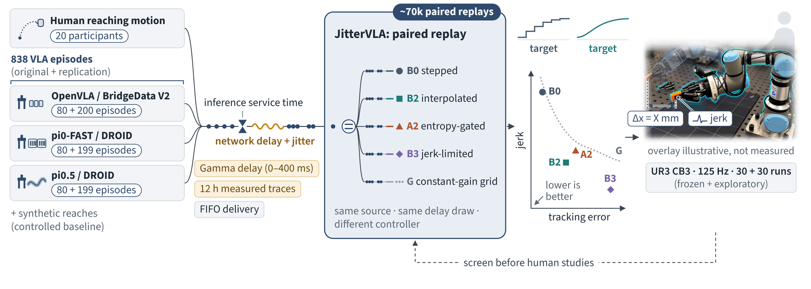
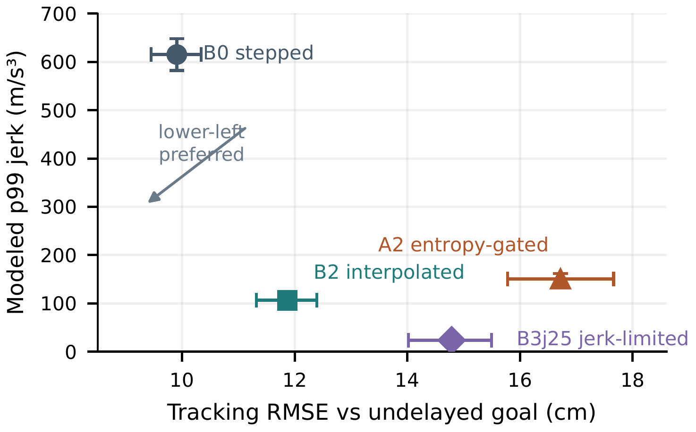
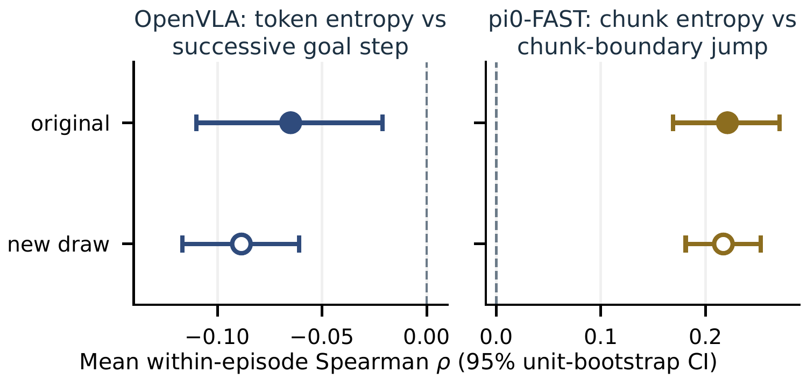
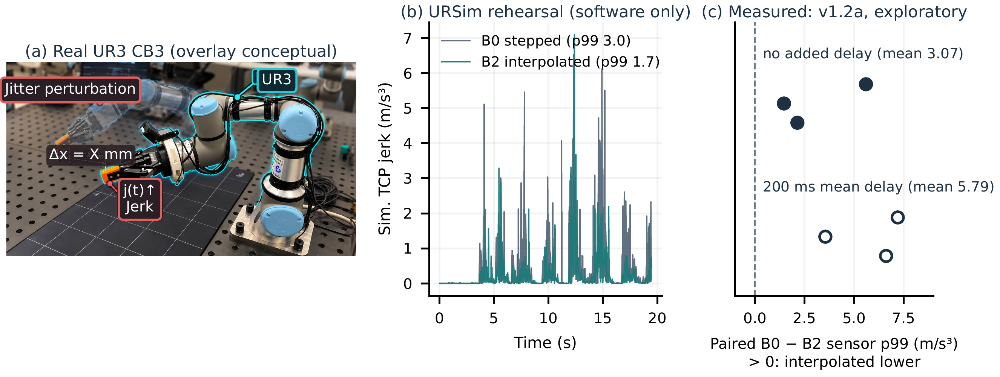

JitterVLA: A Replay Benchmark for Motion Quality in VLA-Driven Human-Robot Manipulation
Same commands. Same delays. Different controller. How command timing and low-level control shape the motion a person actually sees.

A sensible action can still become abrupt motion.
What a person experiences is not the predicted action but the motion the robot executes.
Vision-language-action (VLA) policies run at a few hertz, far below a robot's control loop, and remote or shared inference adds network delay. Their targets arrive sparsely and at irregular times, so the low-level controller receives discontinuous goals. Remedies exist at several layers (action chunking, interpolation, jerk-limited trajectory generation, stiffness adaptation), but each is evaluated on its own streams, delays, plant and metrics, so they cannot be compared fairly.
JitterVLA evaluates the middle of that chain (command stream, timing, controller, executed motion) before candidate behaviours are shown to people. It does not replace human studies; it tells you which conditions deserve one.
Key results. Interpolation lowered modeled p99 jerk for every source, by 83% (615 → 106 m/s³) on human motion with 200 ms delay, at a 2.0 cm tracking cost, and the effect replicated on 598 new episodes. Uncertainty–discontinuity associations had opposite, replicated signs in two VLA pipelines. On a real UR3, interpolation lowered accelerometer-derived jerk by 3.0–14.0% in all six exploratory pairs.
Paired replay isolates the controller.
Every controller sees the same source and the same delay realization, so differences are attributable to the controller.
Timing pipeline
Measured VLA inference service times feed a single-worker FIFO queue. A network delay is then added: none, Gamma-distributed with mean 0–400 ms, or sequential samples from 12 h of measured LAN, internet and HTTPS traces. Separating mean delay from its spread tests jitter, not only latency.
Plant and metrics
Delivered targets drive a generic point-mass impedance plant (3 kg, 20 ms force lag, 3000 N/s force-rate cap, 1 ms steps). We report p99 and RMS jerk, tracking RMSE against the undelayed reference, and the dimensionless smoothness measures LDLJ and SPARC. These are motion-quality proxies, not comfort or safety measures.
Evidence hierarchy. Protocols were frozen before data were seen, and results are never pooled across labels:
A consistent trade-off, and a heuristic that fails.
Synthetic reaches, hand trajectories from 20 people, OpenVLA, pi0-FAST and pi0.5.
Interpolation trades jerk for tracking on every source
Frozen + replicated · B2 − B0 at zero added delayTiming spread, not mean delay, drove stepped-goal jerk. In the frozen sweep on synthetic reaches, pure fixed delays left stepped p99 jerk unchanged, while a delay spread raised it:
Lower jerk is not free
20 people · 200 ms mean Gamma delay
Stepped B0 averages 615 m/s³ at 9.91 cm tracking error. Interpolation (B2) moves to 106 m/s³ at 11.87 cm. Jerk-limited B3 reaches 23.5 m/s³, but at 14.79 cm. Entropy-gated A2 (150 m/s³, 16.72 cm) is worse than B2 on both axes for human input.
The benchmark identifies a useful intervention, a costly one, and a plausible heuristic that fails.
Uncertainty is representation-dependent
Frozen + replicated on new episodesIn OpenVLA, token entropy was weakly negatively associated with the successive goal step (ρ = −.065; new draw −.089). In pi0-FAST, chunk entropy was positively associated with the chunk-boundary jump (ρ = .221; new draw .217). Both directions replicated.
Whether uncertainty tracks downstream discontinuity depends on the pipeline, so uncertainty-based control needs pipeline-specific validation. Entropy gating helped on pi0-FAST and not on OpenVLA; all 28 planned pi0-FAST contrasts and 22 of 28 OpenVLA contrasts replicated.

A bounded physical check.
A UR3 CB3 at 125 Hz, replaying an author's teleoperation trace.

In the frozen v1.2 protocol (30 runs), position-derived jerk did not resolve the planned contrast at the logging resolution. An exploratory v1.2a session (30 runs) logged the tool-flange accelerometer: stepped control exceeded interpolated control in all six direct-mode pairs, with 3.0–14.0% lower jerk under interpolation. This shows the contrast can be observed on hardware; it does not validate the plant as a UR3 model and is not a calibrated or safety result.
What the evidence does not show.
- One generic point-mass plant with open-loop VLA predictions; closed-loop behaviour and task success are outside scope.
- The three pipelines differ jointly in model, data and representation, so they are not a controlled model comparison.
- The UR3 study is small and the accelerometer is uncalibrated.
- All metrics are motion-quality proxies; comfort, trust and perceived safety were not measured.
Paper, data and code.
Citation
@misc{ogunwoye2026jittervla,
title = {JitterVLA: A Replay Benchmark for Motion Quality in
VLA-Driven Human-Robot Manipulation},
author = {Ogunwoye, Faith and Seyidov, Didar and
Gubernatorov, Konstantin and Tsetserukou, Dzmitry},
year = {2026},
note = {Preprint}
}